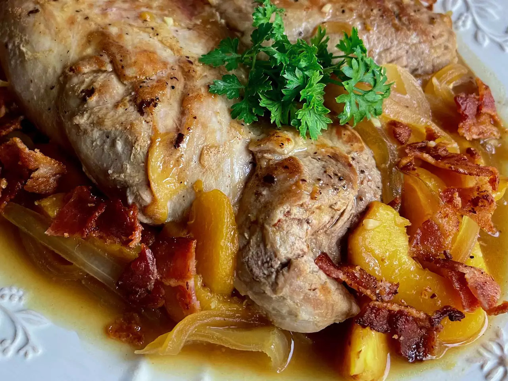

Pork Tenderlon with Peaches

Description
When pork comes together with peaches, onions, and a little orange juice, it's a party of flavors. Sub soy sauce for the fish sauce, if you like. We like this with rice and a green vegetable.
It will take 15 minutes to prepare, 50 minutes to cook, and provide 8 servings in total. Each serving will contain 200 calories, 6g of fat, 79.2mg of cholesterol, 347.4mg of sodium, 8.9g of carbohydrates,and 26.1g of protein.
Ingredients
- 3 slices bacon
- 1 (2 pound) package pork tenderloin
- ½ teaspoon salt
- ¼ teaspoon freshly ground black pepper
- ¾ teaspoon ground ginger, divided
- 1 ½ cups vertically sliced onion
- 1 ½ teaspoons minced garlic
- 2 cups peeled and sliced fresh peaches
- 1 cup low-sodium chicken broth
- 2 tablespoons frozen orange juice concentrate
- 1 teaspoon fish sauce
- 2 tablespoons water
- 2 tablespoons cornstarch
- fresh parsley for garnish (optional)